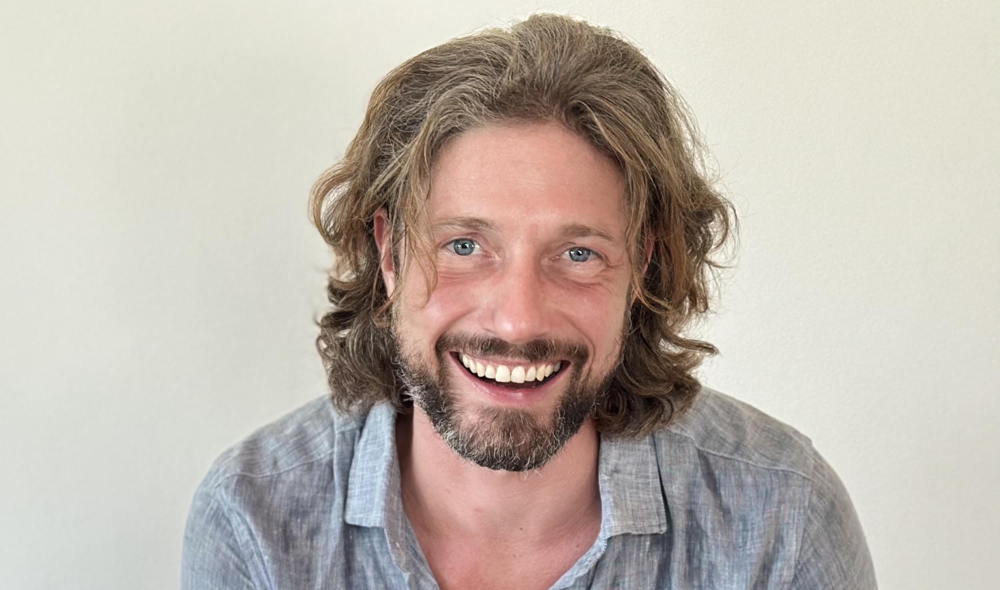

Trauma & My Approach
Trauma is not only about what happened in the past, but also about the ways those experiences continue to affect the present.
How trauma affects the present
Difficult or overwhelming experiences can leave a lasting impact on the nervous system, emotional regulation, relationships, and sense of self. Trauma may present through symptoms such as anxiety, panic, emotional numbness, hypervigilance, intrusive memories, flashbacks, shame, low self-worth, or persistent patterns of avoidance and control.
Sometimes the source of trauma is clear and identifiable. In other cases, the impact develops more gradually through repeated experiences of criticism, emotional neglect, instability, rejection, or chronic stress.
I work with both acute trauma ("big T" trauma) and more cumulative or relational forms of trauma ("small t" trauma). Both can have a profound psychological impact, and both are treatable.
Book a Free 30-Minute Intro Call
Trauma I work with
Regardless of how trauma manifests itself, therapy can help restore a greater sense of safety, stability, emotional freedom, and self-trust.
Trauma-focused treatment
My work integrates evidence-based trauma-focused approaches, tailored to the individual and the nature of the difficulties involved. The aim is not only symptom reduction, but also helping clients process unresolved experiences and develop a more stable and compassionate relationship with themselves.
Primary method
EMDR
Eye Movement Desensitization and Reprocessing — the gold standard evidence-based treatment for trauma and PTSD. Using bilateral stimulation to help the brain process and integrate traumatic memories.
Trauma processing
Exposure Therapy
Gradual, structured confrontation with fear and trauma. Helps reduce avoidance and integrate difficult experiences into a coherent understanding of the self.
Trauma processing
Flash Technique
A gentler entry point for trauma processing when memories are highly distressing or flooding. Particularly helpful when clients are in acute distress or when dissociation is present.
Memory reworking
Imagery Rescripting
Rewriting painful emotional memories to reduce their distress and emotional charge. Particularly effective for childhood trauma, neglect, and shame-based experiences.
Deep patterns
Schema Therapy
Addressing deep-rooted emotional patterns formed in childhood. Brings care and understanding to wounded inner parts, replacing maladaptive coping with genuine emotional healing.
Integrative
Parts-oriented & Somatic
Body-based and parts-oriented approaches to access and release what is held in the body and nervous system — where talk therapy alone cannot reach.
EMDR is not only about the past
EMDR is widely known as a treatment for painful memories and trauma from the past. However, it can also be highly effective in treating intense fears, catastrophic future scenarios, and intrusive "flashforward" images that keep people stuck in anxiety and avoidance.
When these fears become emotionally charged and repetitive, they can strongly shape a person's daily life and sense of freedom. Through EMDR, exposure therapy, CBT, and experiential interventions, these patterns are often very treatable.
Panic about panic attacks
Treating the fear of anxiety itself — not just the symptoms.
Health anxiety
Catastrophic health fears and intrusive bodily preoccupations.
Fear of losing control
Social fears, shame spirals, and catastrophic "what if" thinking.
Future-oriented anxiety
Emotionally charged flashforwards that keep people stuck.


Why I specialize in trauma treatment
I have a strong affinity for trauma-focused work because trauma often lies at the core of longstanding psychological suffering. When unresolved experiences begin to process and integrate, meaningful shifts can occur — not only in symptoms, but also in the way people relate to themselves, others, and life more broadly.
One of the reasons I value trauma-focused therapy is that treatment can often be both structured and effective. Over the years, I have repeatedly seen how reducing traumatic stress can create space for greater emotional freedom, self-understanding, resilience, and connection.
Trauma therapy is ultimately about helping people move from survival-based patterns toward a greater sense of safety, flexibility, and trust — both in themselves and in life.
Meaningful recovery is possible
Trauma can deeply affect the way a person experiences themselves, others, and the world around them. At the same time, meaningful recovery and psychological change are possible. Therapy offers the possibility to process unresolved experiences, reduce the grip of fear and avoidance, and create more space for emotional freedom and stability.